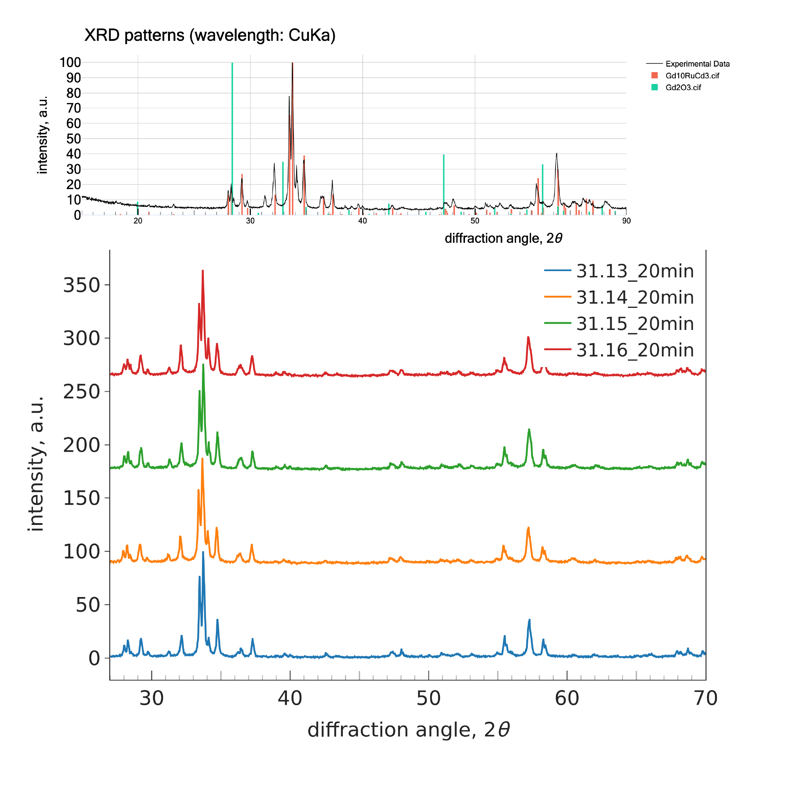

Hi! I'm a PhD student at City University in NYC. My research
interests are pretty broad, but revolve around using
computational methods to explore
novel materials and chemistries coupled with experimental
validation, although I'm a bench chemist at heart.
I'm currently working with Dr. Anton Oliynyk
on synthesizing and studying novel intermetallic compounds.
We use electronic structure calculations and machine-learning
(ML)
methods to predict things like crystal structures,
thermodynamics or
magnetism. Our research focuses on intermetallics
involving uranium, thorium, and rare-earth elements,
with every ML model we develop being experimentally validated.
For just under a year I was a research chemist for
the applications group at ICL.
I pretty much made foam and burned it.
A more sophisticated response would be that I evaluated a bunch
of different bromine and phosphorus-based flame retardants for
applications in polyurethane foams.
This included both R&D and market support for customers,
making sure various international safety standards were met.
In undergrad I worked alongside Dr. Julia Schneider to
synthesize both single molecule and polymeric organic
semiconductors
and Dr. Joshua Schrier to
investigate these molecules computationally with density
functional theory. We recently presented
here
on
this
and
this
.
Recent Work

The XRD Comparison Tool allows users to compare multiple .xy files from X-ray diffraction (XRD) experiments to identify impurities and phase differences. The XRD Pattern Matcher enables users to compare experimental .xy files with .cif crystal structure files for phase identification and material characterization.

This script parses .csv files produced by the high-throughput LMTO package and automatically produces easily readable & aesthetically pleasing plots ready for publication, posters or presentations.

Contributed to developing SA, a user-interactive Python script that parses .cif files based on
structure type and creates a CSV table with site compositions, and heat maps for each site (up to 5 sites) and a
heat map for compositions.

Contributed to developing CAF, a user-interactive Python script that offers tools
for generating compositional features. It also provides interactive tools
used for tasks such as filtering, sorting chemical formulas, and merging Excel files.
Contributed to some
troubleshooting with this project by
Bob Lee,
a peer of mine at Columbia University.
CBA is an interactive, command-line Python application
designed for high-throughput extraction of minimum
bond length and atomic mixing information from CIF
files, used in solid-state chemistry.

Used Hückel theory to explore
isomeric dimers by analyzing frontier orbitals and
their orbital energies. This approach simplifies electron
behavior, assuming sigma and pi electrons can be
separated, and helps discern differences in bonding and
stability between isomers based on eigenvalue ordering.
Some Tutorials
I compiled some little guides below to streamline the process for anyone who needs them, feel free to check them out!


{kind=link}
{kind=link}